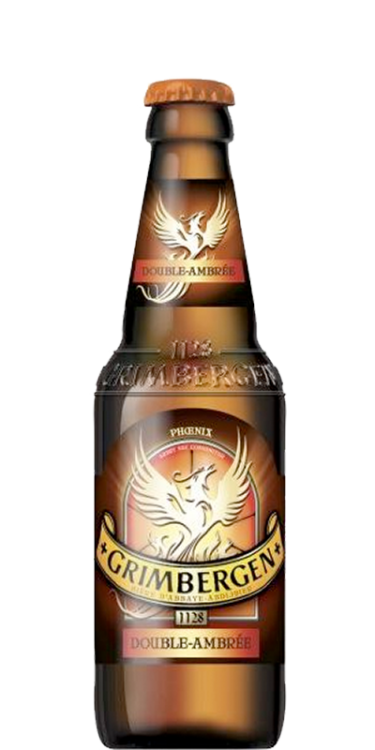
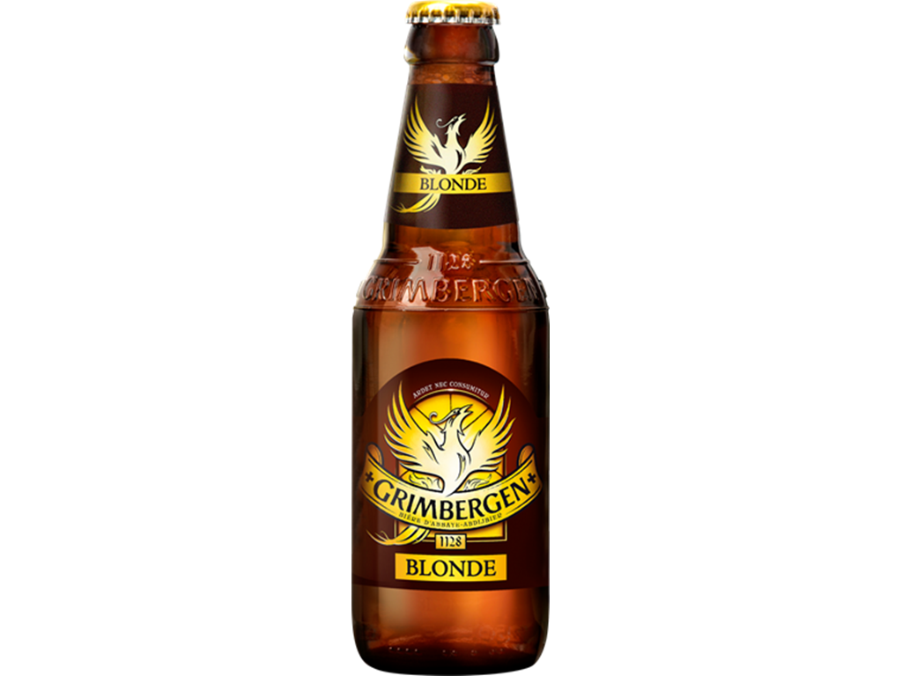

Andre kunder har også set på dette:
Tilbud!

Grimbergen Double-ambrée
Tilføj til kurv 50 ,-
Grimbergen Double er en belgisk klosterøl. Øllen har en smuk kobbergylden farve toppet af en flot råhvid skumkrone. Duften er fyldig med rige frugtige noter af velmodne pærer, vanilje og anis, fulgt af strejf af mørkt sukker og karamel. Øllen er indledningsvist sødlig med en passende bitterhed, der giver en herlig læskende balance. Fylden er blød og rund med et let brændt eftersmag. Nydes bedst ved 10-12 ºC.
Grimbergen Blonde
